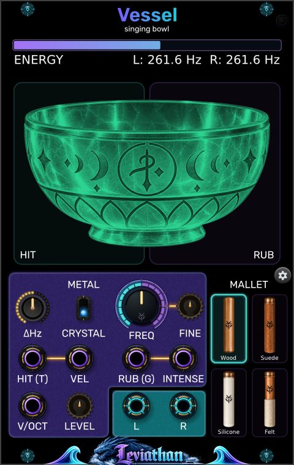

Energy and frequency readout
Above the bowl
The bar follows energy remaining in the model, including quiet tails. L and R show the two bowl frequencies. This is a model-energy display, not an output-level meter.
Leviathan for VCV Rack 2 · Open Source
A 16 HP singing-bowl voice with struck and friction excitation, hands-on performance pads, and separately tuned stereo bowls.

A bowl you can play
Vessel models a resonant bowl excited by a mallet. Strike it for a ringing decay, or maintain friction around its rim to build a sustained tone. Pitch, material, and mallet choice shape the response; the bowl can keep ringing after the gesture ends.
Use Vessel alone for direct performance and CV control. Add V.Tune for six dedicated controls over excitation, decay, mode-pair imperfection, and stereo observation.
First patch
Panel breakdown
Click a numbered marker to jump to its description. Controls and connections have separate views.
Above the bowl
The bar follows energy remaining in the model, including quiet tails. L and R show the two bowl frequencies. This is a model-energy display, not an output-level meter.
Left half of the bowl
Click to strike once. Higher on the pad gives greater velocity; the bottom gives zero. Holding does not repeat the hit. Release and click again for another strike.
Right half of the bowl
Hold to rub, and drag vertically to change intensity: higher is stronger. Release to stop manual rubbing; a connected RUB gate can still keep contact active.
Main knob and small adjacent knob
FREQ sets the base pitch from 20 Hz to 2 kHz; the default is C4 (about 261.63 Hz). FINE adds −100 to +100 cents. V/OCT adds pitch CV, with the combined target limited to 20–2000 Hz.
Material switch
Selects one of two bowl profiles. Crystal is the default. Compare both with the same strike and pitch; they change the resonant character of the model.
Four illustrated choices
Click Wood, Suede, Silicone, or Felt. The selection affects both impact and friction behavior. Wood is the default; a mallet that suits a strike may behave differently when rubbed.
Lower-left large knob
Sets the difference between left and right bowl frequencies, 0–33 Hz. Zero gives equal tuning. This is separate from V.Tune’s WIDTH control.
Small knob near V/OCT
Output gain from 0–200%, default 100%. It remains on Vessel when V.Tune is attached. Lowering it reduces the output without changing the bowl’s stored energy.
Gear button; top-right indicator
Click the gear to create V.Tune immediately to the right. The button hides while the companion is attached. Vessel’s link light is amber while attached but not ready, and green when accepting its controls.
Trigger input
A rising edge strikes the bowl. The threshold is 1 V; the detector rearms at 0.1 V or below. A held high signal produces one hit.
Velocity input · 0–10 V
Sets gate-triggered hit velocity, replacing the stored or V.Tune VELOCITY setting. 0 V gives no hit energy; 10 V gives full velocity. Manual HIT uses its pad position instead.
Gate input
Holds friction contact active. Turns on at 1 V and off at 0.1 V or below. With INTENSE unpatched, rubbing uses the stored or V.Tune SPEED and PRESSURE settings.
Intensity input · 0–10 V
Overrides separate speed and pressure with a coordinated rubbing gesture. Requires RUB (G) to be high, unless the manual RUB pad is held. The held pad takes priority over this input.
Pitch input
Adds 1 V per octave to FREQ and FINE. All inputs use channel one; Vessel is a monophonic voice with stereo output.
Two mono audio outputs
Patch both to a stereo mixer or audio destination. Each jack carries one channel. One output can be used alone, but it does not sum the stereo pair.
Hits, rubbing, and CV
| Gesture | What starts it | What sets its strength |
|---|---|---|
| Manual hit | Click HIT; release before the next hit. | Vertical click position. Takes priority over VEL for that manual event. |
| Triggered hit | Rising edge at HIT (T). | VEL if connected; otherwise V.Tune VELOCITY or Vessel’s retained setting (initially 50%). |
| Manual rubbing | Hold RUB; release to end the manual gate. | Vertical position on the pad. Overrides INTENSE and the separate speed/pressure settings while held. |
| CV rubbing with intensity | Hold RUB (G) high, with INTENSE patched. | INTENSE coordinates pressure and speed. Inputs below 0 V or above 10 V are clamped. |
| CV rubbing with separate controls | Hold RUB (G) high, leaving INTENSE unpatched. | V.Tune SPEED and PRESSURE, or their retained Vessel values (initially 0.2 rev/s and 2.5 N). |
Friction is an interaction between speed, pressure, mallet, and the bowl’s existing energy. More intensity need not sound like a simple volume increase. Let a setting settle before comparing another, and try a small hit to begin a sustained gesture.
All five input jacks read their first channel. A polyphonic pitch or gate cable does not create extra voices. HIT and RUB can be used together.
Pitch and stereo
FREQ, FINE, and V/OCT establish the center pitch. ΔHz separates the bowls around that center: the left is lower by half the difference and the right is higher by half. At 261.63 Hz with ΔHz = 6 Hz, the readout is approximately L: 258.6 Hz and R: 264.6 Hz. Near the pitch limits, the center is moved inward to keep both bowls within 20–2000 Hz.
V.Tune WIDTH changes the separation of the observation positions on the modeled bowl. It does not set a frequency difference. To compare the two effects, first leave ΔHz at zero and sweep WIDTH; then hold WIDTH steady and slowly raise ΔHz.
The labels DELTA, THETA, ALPHA, BETA, and GAMMA above ΔHz identify ranges of the selected frequency difference. They are not measurements of the listener. The bowl’s color follows pitch.
Connect V.Tune
On attachment, V.Tune adopts the current Vessel settings. While connected, Vessel retains the received settings, so removing or bypassing V.Tune leaves the latest values available. Moving a V.Tune to another Vessel adopts that new neighbor’s values.
Quality and patch storage
Right-click Vessel for Processing quality (performance test). The options are 48 kHz — Economy, 96 kHz — Balanced, and 192 kHz — Reference. Balanced is the default. These are target modes; the actual internal rate depends on the host sample rate and any fallback. Read the Actual internal rate entry in the menu.
Saving the Rack patch preserves controls, selected material and mallet, and processing quality. Save the connected pair to keep V.Tune’s panel settings and body-map preferences too. The running vibration is not stored as an audio recording; excite the bowl again after loading.
Bypassing Vessel mutes its outputs while its model continues processing. It does not freeze the ringing tail.
Patch ideas
Patch a pitch sequence to V/OCT, triggers to HIT (T), and stepped 0–10 V CV to VEL. Leave ΔHz at zero while choosing the material and mallet.
Velocity changes the excitation, giving each hit its own attack and resonant response.
Send a long gate to RUB (G) and a slow rising envelope to INTENSE. Let the envelope fall before ending the gate, then listen to the remaining tail.
The intensity path coordinates speed and pressure for a sustained gesture.
Hold a steady center pitch and set ΔHz to a few hertz. Strike or rub, then compare both outputs in stereo and in a mono mix.
The two bowl frequencies remain related while their relative phase evolves.
Troubleshooting
Check LEVEL, your audio routing, and whether Vessel is bypassed. Click above the bottom of HIT. For gate-triggered hits, a connected VEL at 0 V suppresses the strike.
Hold RUB (G) high. INTENSE controls the gesture but does not start contact by itself. A held manual RUB pad overrides INTENSE.
Release the manual RUB pad and unplug INTENSE. Hold RUB (G) high to hear the separate V.Tune controls.
Check RUB (G): an external high gate keeps contact active. If the gate is low, you may be hearing the bowl’s natural decay.
HIT is edge-triggered. Release and click again, or send repeated triggers to HIT (T). Use RUB for a continuous gesture.
Changing the processing quality intentionally resets the bowl. Start a new hit or rubbing gesture after the switch.
Reference
VCV Rack 2 · 16 HP · monophonic physical-model voice · five mono CV/gate inputs · two mono audio outputs forming a stereo pair · two materials · four mallets · optional right-side V.Tune.
Checked against the local Vessel engine, performance-pad widgets, V.Tune connection protocol, and plugin manifest on October 28, 2026. Appearance and available behavior can differ between releases.